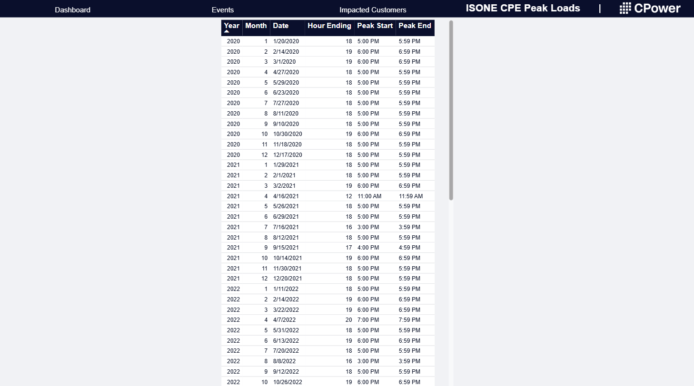
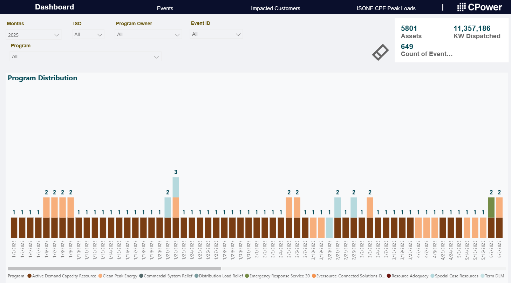
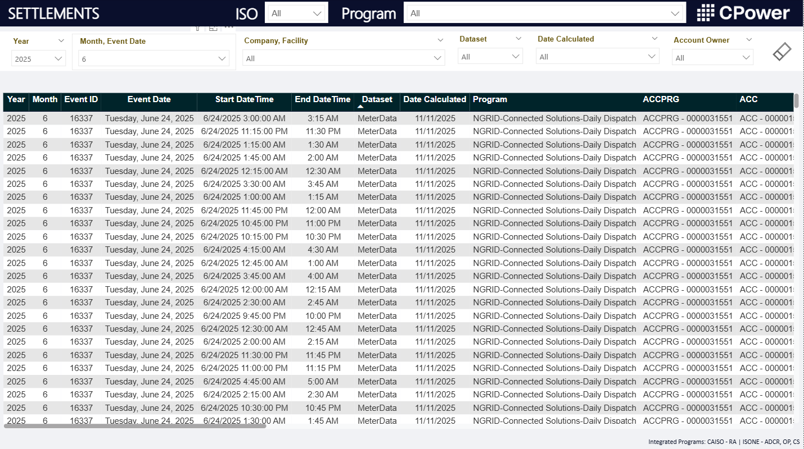
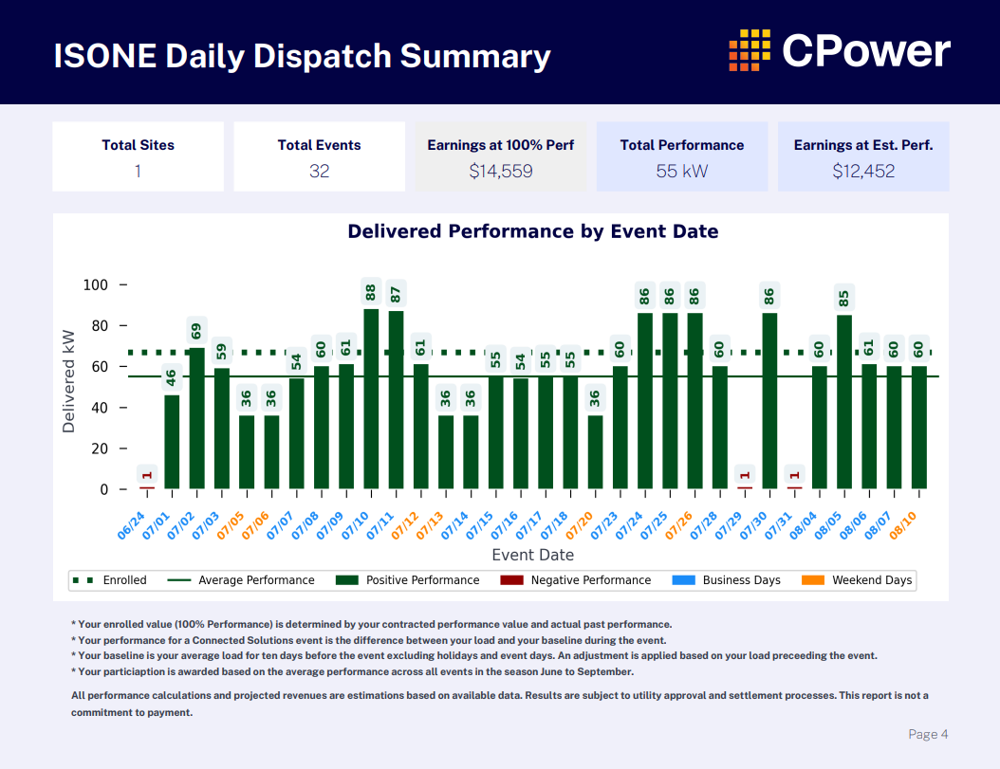

Forecasting
Energy Load Forecasting for New York Operations
Built machine learning forecasting workflows to predict energy load behavior using historical consumption patterns, weather inputs, calendar effects, and operational features.
Data Science Portfolio
Data Scientist focused on forecasting, dashboards, workflow automation, and decision support
I develop data science and analytics solutions that improve visibility, streamline workflows, and support better decisions. My experience spans forecasting, dashboard development, Python automation, database design, and building scalable tools for real operational use.
About
I am a data scientist who builds practical systems that turn operational data into forecasts, dashboards, automations, and decision-support tools. My work sits at the intersection of modeling, analytics engineering, and process improvement, with hands-on experience building solutions for real users in energy and operations environments.
I focus on making data work in practice, not just in notebooks. That includes designing scalable workflows, structuring high-volume data, automating recurring analysis, and building tools that improve visibility and reduce manual effort across teams.
Featured Projects

Forecasting
Built machine learning forecasting workflows to predict energy load behavior using historical consumption patterns, weather inputs, calendar effects, and operational features.

Automation
Built an automation portfolio for ISO-NE-related operational processes, including databases, Python modules, dashboards, reporting tools, and user-facing systems that replaced inefficient legacy workflows.

Infrastructure
Designed database and data-processing workflows to support multiple operational datasets at production scale, including systems receiving roughly 2 to 3 million new rows per month.

Reporting
Built report-generation workflows that integrated cross-ISO enrollment, settlement, and interval data into consistent outputs for business users.
Front-End Development
Built internal-facing interfaces that simplified recurring workflows, improved access to operational data, and reduced friction for day-to-day users.
Labeling
Applied unsupervised clustering to create stronger label structures and engineered features that improved downstream forecasting and risk-oriented analysis.
Experience Snapshot
Data Scientist / Operations Analytics
Built forecasting workflows, automation systems, dashboards, and data tools supporting operational and market-facing processes. Developed scalable databases, reporting systems, and user-facing analytics adopted across teams.
Freelance Data Analyst / Dashboard Developer
Created interactive Excel dashboards for a loan analysis client to improve reporting, visibility into deal metrics, and decision-making. Designed user-friendly tools that organized financial and lending data, reduced manual spreadsheet work, and made ongoing analysis more efficient.
Resume, GitHub, and Contact
I’m looking for data science roles where I can contribute across forecasting, analytics automation, dashboards, and decision-support systems. For more detail, view my resume or explore project code and case studies on GitHub.